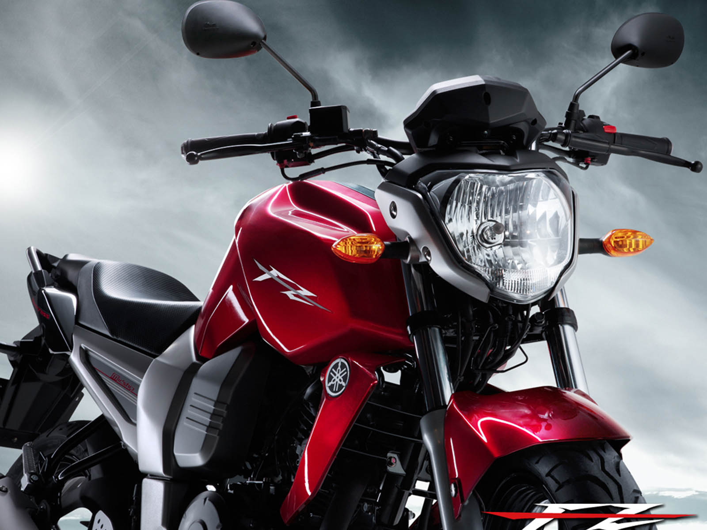

yamaha R15 V3

The Yamaha R15 V3 BS6 was launched starting at Rs 1,45,300 (ex-showroom, Delhi) but prices now range from Rs 1,45,800 to 1,47,900. The 2020 Yamaha R15 is available in three colours -- Racing Blue (Rs 1,46,900), Thunder Grey (Rs 1,45,800) and Darknight (Rs 1,47,900).
yamaha MT

The MT-15 is a Pure-bred hyper naked, one of the most dynamic light weights from the MT stable. This bike has all the traits of a hyper naked with its agile handling, wide handle bar and ultra-light weight of 138 kgs. The impeccably styled MT-15 with its Bi functional LED headlight gives the motorcycle an aggressive and intimidating look. This hyper naked bike will not only give you the thrill you seek but will also inspire immense confidence in the rider.
yamaha RX100

The Yamaha RX100 was the go-to bike for two-wheeler enthusiasts back in the 80's and early-90s. ... The Yamaha RX100 was powered by an air-cooled, 98cc, single-cylinder, two-stroke motor that produced 11PS @ 7500rpm. Power was sent to the rear wheel via a 4-speed gearbox.
yamaha FZ

Yamaha FZ S FI is a commuter bike available at a starting price of Rs. 1,04,985 in India. ... The FZ S FI is powered by 149cc BS6 engine which develops a power of 12.2 bhp and a torque of 13.6 Nm. With both front and rear disc brakes, Yamaha FZ S FI comes up with anti-locking braking system.
yamaha FZ10

Yamaha FZ S FI is a commuter bike available at a starting price of Rs. 1,04,985 in India. ... The FZ S FI is powered by 149cc BS6 engine which develops a power of 12.2 bhp and a torque of 13.6 Nm. With both front and rear disc brakes, Yamaha FZ S FI comes up with anti-locking braking system.
yamaha FZ3.0

The new FZFI with a Blue Core concept driven 149 cc engine now with "Side stand engine cutoff switch" and Bluetooth-enabled "Yamaha Motorcycle Connect X". The FZFI has compression ratio of 9.6:1 and delivering a maximum 12.4 PS power @ 7,250 r/min and 13.3 N.m torque @ 5,500 r/min with single channel ABS with disc brakes in the front & rear wheel along with negative LCD instrument cluster and a single piece two level seat.